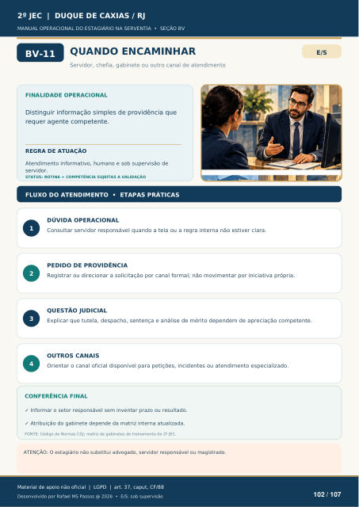

QUANDO ENCAMINHAR
Servidor, chefia, gabinete ou outro canal de atendimento
FINALIDADE OPERACIONAL
Distinguir informação simples de providência que requer agente competente.
REGRA DE ATUAÇÃO
Atendimento informativo, humano e sob supervisão de servidor.
STATUS: ROTINA + COMPETÊNCIA SUJEITAS A VALIDAÇÃO
FLUXO DO ATENDIMENTO • ETAPAS PRÁTICAS
DÚVIDA OPERACIONAL
Consultar servidor responsável quando a tela ou a regra interna não estiver clara.
PEDIDO DE PROVIDÊNCIA
Registrar ou direcionar a solicitação por canal formal; não movimentar por iniciativa própria.
QUESTÃO JUDICIAL
Explicar que tutela, despacho, sentença e análise de mérito dependem de apreciação competente.
OUTROS CANAIS
Orientar o canal oficial disponível para petições, incidentes ou atendimento especializado.
CONFERÊNCIA FINAL
Informar o setor responsável sem inventar prazo ou resultado.
Atribuição do gabinete depende da matriz interna atualizada.
FONTE: Código de Normas CGJ; matriz de gabinetes do treinamento do 2º JEC.
ATENÇÃO: O estagiário não substitui advogado, servidor responsável ou magistrado.
Ver também o infográfico original (página 102)
